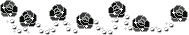
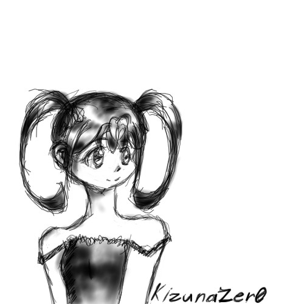
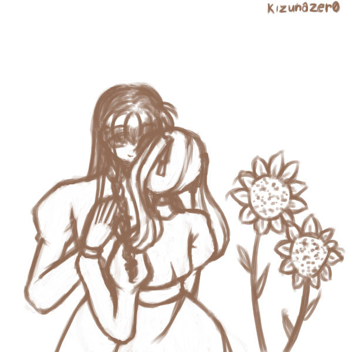
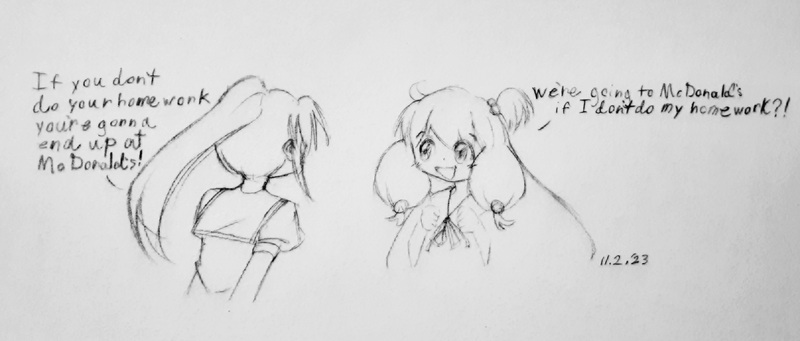
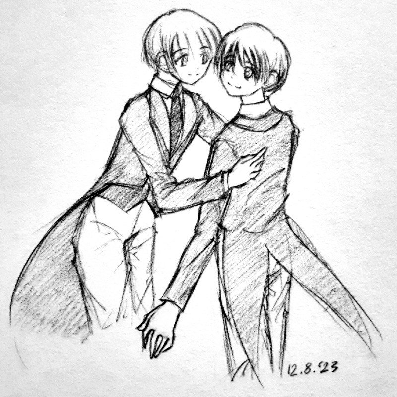

Here you will find drawings particularly special to the webmaster.
Polly (Original)
My first drawing in chickenpaint! I made it on 2draw.net on September 22, 2022. Looking back on it over a year later, it's rather crummy, but it has a lot of sentimental value to me 〔´∇｀〕.
Two Little Sunflowers (Original)
Ah, another one of my old 2draw pics. By my current standards it's kinda bad, but I really liked it when I made it. Even now, I think it's rather sweet.
That McDonald's Vine But It's Teekyuu (fanart)
I thought of this meme on a whim one day and decided to draw it. Teekyuu is a rather obscure work outside of Japan, I wish it would become more popular...
Friendship (Fanart)
Yes, this is a fan illustration. It's based on a really obscure work, The Hill by Horace Annesley Vachell, which is a book, so I've had to use my imagination to some extent. It's too unknown to have a fandom, but I'm a creative person so I feel the impulse to create secondary creations even if only really for my own enjoyment.